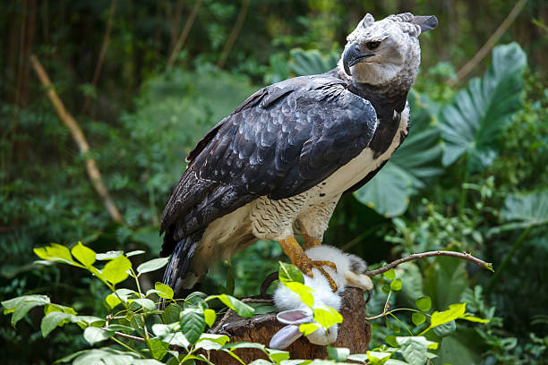
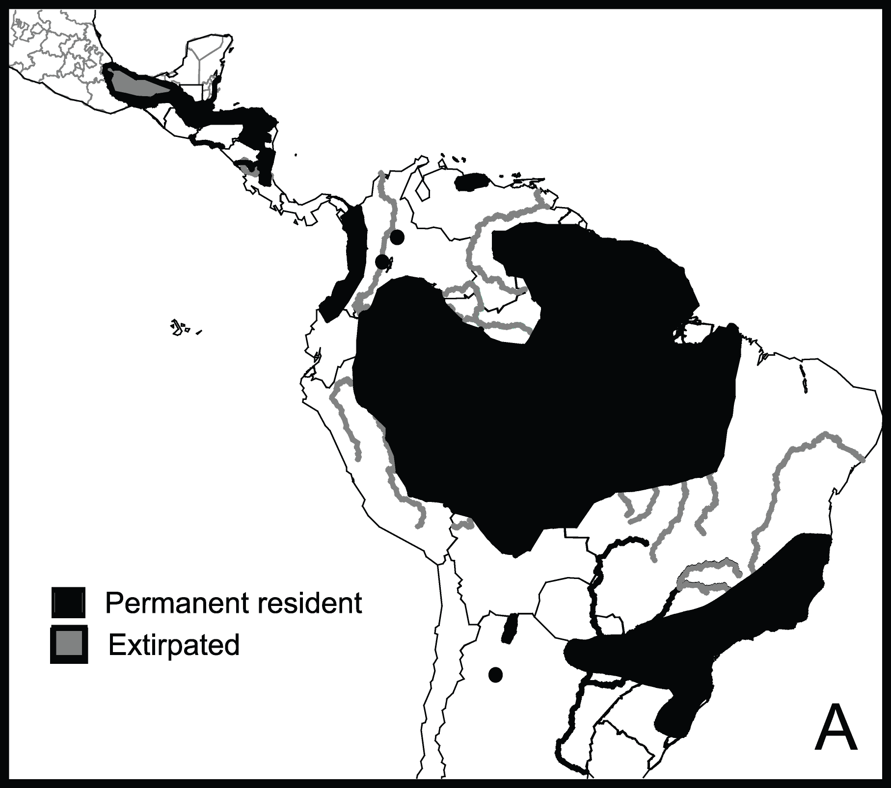

ÚLTIMO ACHADO:
Nome científico:
Harpia harpyja
Canto:
..... arquivo mp3 da vocalização do animal......
Distribuição geográfica
Curiosidades
- A relato, de povos originários sul-americanos, que essas aves caçavam crianças.
- Sua visão é 8x mais potenteque a de um ser humano.
- É a segunda maior ave da rapina do Mundo, perdendo apenas para oCondor-dos-Andes..
- Pode chegar a pesar mais de 9kg!